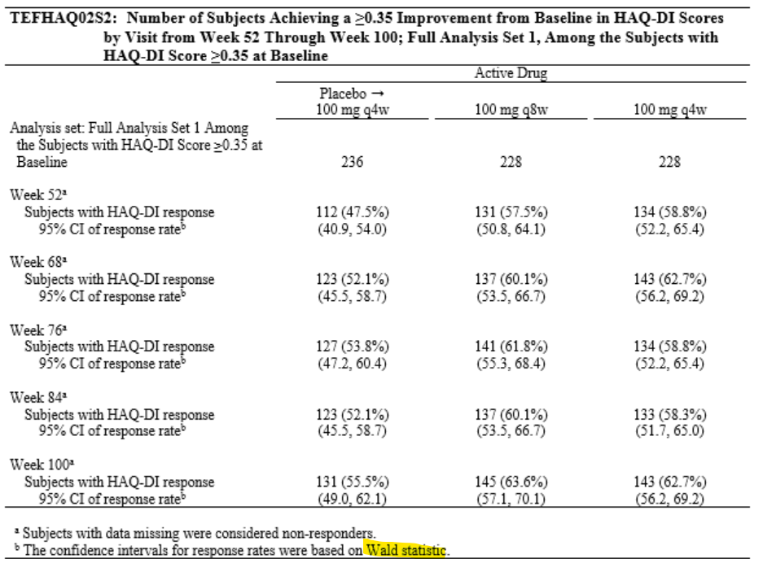

Chapter 8 The Binomial Test
8.1 Overview
The binomial test is used to make inferences about a proportion or response rate based on a series of independent observations, each resulting in one of two possible mutually exclusive outcomes, such as:
+ response to treatment vs. no response
+ cure or no cure
+ survival or death
+ event vs non-event (in general)The total number of events in n observations, X, follows the binomial probability distribution. Intuitively, the sample proportion, X/n, would be a good estimate of the unknown population proportion, p. Statistically, it is the best estimate.
You want to determine whether the population proportion, p, differs from a hypothesized value, p0. If the unknown proportion, p, equals p0, then the estimated proportion, X/n, should be close to p0, i.e., X should be close to n * p0. When p differs from p0, X might be much larger or smaller than n * p0.
SAS function, probbnml() can be used to determine XL and XU (lower limit and upper limit)
8.2 Normal Approximation
For larger values of n and non-extreme values of p, a binomial response, X, can be approximated by a normal distribution with mean n * p and variance n * p * (1-p). This approximation improves as n gets larger or as p gets closer to 0.5
8.3 A proc freq example
data acr20;
input patient $ avalc $ @@;
cards;
1 Yes 2 No
3 Yes 4 No
5 Yes 6 Yes
7 No 8 Yes
9 No 10 No
11 Yes 12 No
13 Yes 14 No
15 Yes 16 No
17 No 18 Yes
19 Yes 20 No
21 Yes 22 Yes
23 No 24 Yes
25 Yes
;
run;
data acr20a;
set acr20;
avalc=ifc(avalc="Yes", "1Yes", "2No");
run;
proc freq data=acr20a;
tables avalc / binomialc (p = 0.4) alpha=0.05;
exact binomial;
title1 "Binomial Test";
run;8.3.1 A real example from trial

8.3.1.1 proc freq to calculate Wald CI
data resp;
input avisitn avisit $ trt01pn avalc $ count;
cards;
20052 Week_52 1 N 124
20052 Week_52 1 Y 112
20052 Week_52 2 N 97
20052 Week_52 2 Y 131
20052 Week_52 3 N 94
20052 Week_52 3 Y 134
20068 Week_68 1 N 113
20068 Week_68 1 Y 123
20068 Week_68 2 N 91
20068 Week_68 2 Y 137
20068 Week_68 3 N 85
20068 Week_68 3 Y 143
;
run;
proc sort data=resp;
by avisitn avisit trt01pn;
run;
ods output BinomialCLs=bincl;
proc freq data=resp;
by avisitn avisit trt01pn;
table avalc/binomial(level = "Y" CL=WALD(CORRECT));
weight count;
run;
data resp2;
set bincl;
if proportion not in (0,.) then percent = round(proportion * 100, .1);
else percent=0;
if lowercl not in (0,.) then lowercl = round(lowercl * 100, .1);
else lowercl=0;
if uppercl not in (0,.) then uppercl = round(uppercl * 100, .1);
else uppercl=0;
run;8.4 The Chi-Square Test
The chi-square test is used to compare two independent binomial proportions, p1, and p2. Often, you want to compare the ‘response’ rates between a treated group and a parallel control group.
The chi-square test is an approximate test, which may be used when the normal approximation to the binomial distribution is valid.
8.5 CMH
Example: TEFDACT08 from PSA3002 Week 24
8.6 Fisher’s exact test
Example: TEFDAPSA02 from PSA3002 Week 24
Walker, Glenn A., and Jack Shostak. 2010. Common Statistical Methods for Clinical Research with Sas Examples. 3nd ed. Cary, NC: SAS Institute Inc. http:support.sas.com.
Xie, Yihui. 2020. Bookdown: Authoring Books and Technical Documents with R Markdown. https://github.com/rstudio/bookdown.